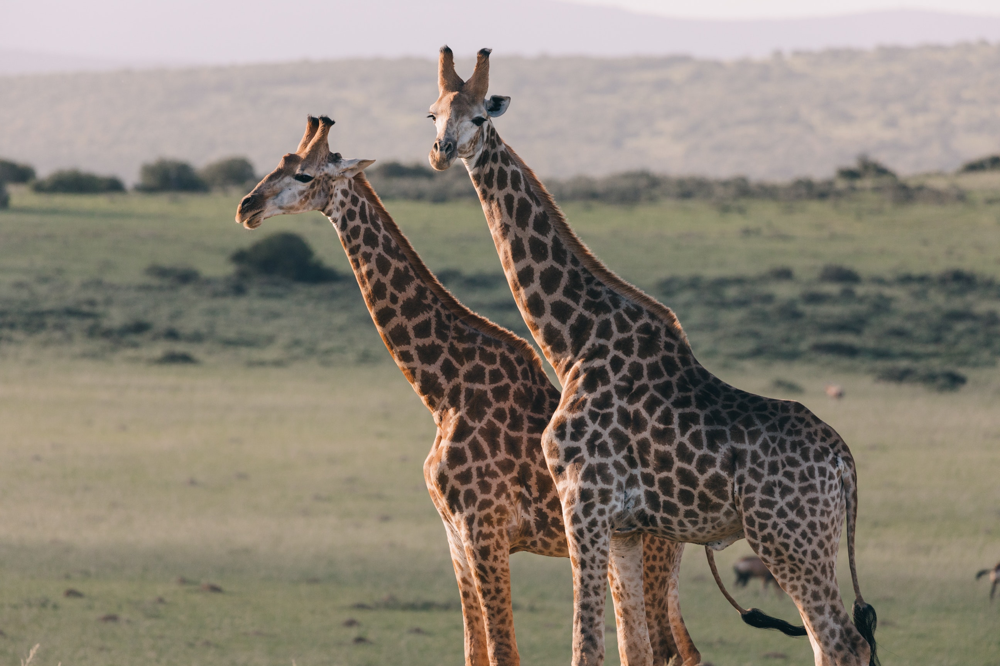
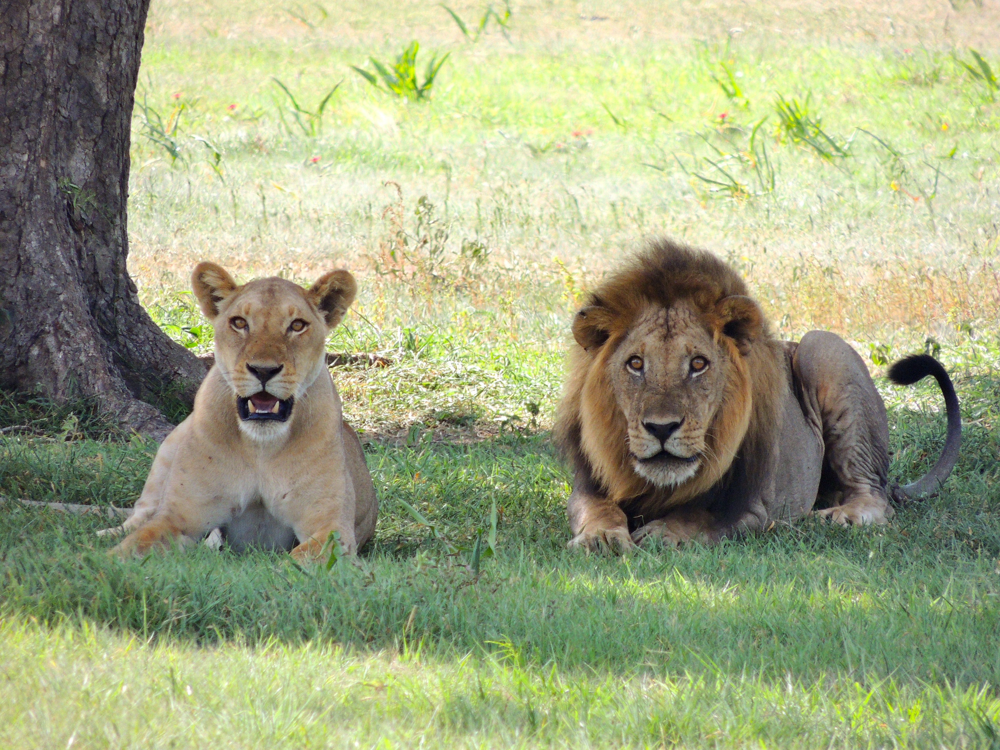

Bears

Bears are an intelligent wild animal. They have strong senses such as smell, sight and hearing. The may look soft and cudly but they can also be vicious animals when food is involved. There are many types of bears, but in our zoo we have two Grizzly Bears.
- Ollie
- Mona
Giraffes
Our guests here at our Zoo, love our giraffes. They are the tallest mammals on Earth and can run up to 35 miles an hour. They are a great attraction in our Zoo, since Giraffes don't sleep very often. We have two Giraffes in our Zoo.
- Frankie
- Coconut
Lions
Lions and tigers and bears oh my. We may not have tigers at our Zoo but we have Lions. A lions roar can be heard from over 5 miles away. They have a lot of strength and are sleepy wild animals. They can sleep up to 20 hours a day. We have two lions in our Zoo.
- Mella
- Karl
Monkeys

Monkeys are very unique wild animals. They are very vocal when it comes to communicating with other monkeys. They like to groom each other to bond with one another. We have three monkeys in our Zoo.
- Cookie
- Earl
- Banana Pudding
Alligators

Alligators are large reptilles. They are often mistaken for Crocodiles, but Alligators are the ones with a wide rounded snout, when Crocodilies have a more narrow snout. Be cautious around the three Alligators at our Zoo.
- Wren
- Aspen
- Mika